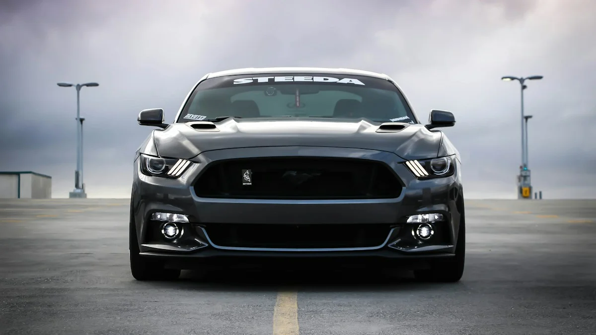
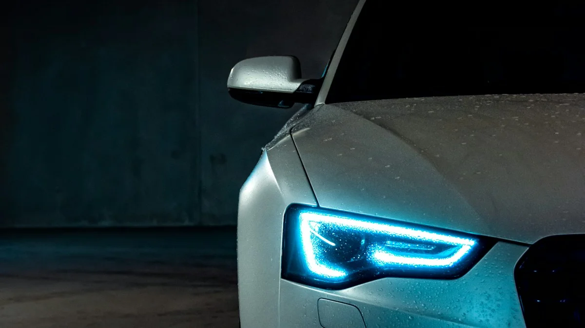

Choosing the Best Window Tint Percentage for Safe Night Driving
By Riverside Tints | September 11, 2026

One of the most common concerns we hear at our shop is, "I want my car to look aggressive and block the heat, but I'm worried I won't be able to see at night." It's a highly valid concern. Choosing the wrong shade of window tint can turn a late-night drive into a stressful and dangerous experience. So, what is the best window tint percentage for safe night driving?
Let's break down the percentages, how they impact visibility, and how modern ceramic technology allows you to get the best of both worlds.
Understanding VLT (Visible Light Transmission)
Window tint darkness is measured in VLT (Visible Light Transmission). This percentage represents the amount of visible light the film allows to pass through the glass. A lower number means a darker tint. For example, a 5% tint (often called "limo tint") only lets 5% of light through, while a 70% tint allows 70% of light through and appears nearly clear.
The Danger of Going Too Dark
While 5% or 15% tint looks incredible on a sports car, it significantly impairs your vision in low-light conditions. At night, especially on unlit roads or poorly lit neighborhoods, very dark tint makes it incredibly difficult to spot pedestrians, cyclists, or debris in your peripheral vision.
If you frequently drive at night, especially in suburban or rural areas without bright streetlights, we strongly advise against applying 5% tint to your front driver and passenger windows.
The Sweet Spot: 35% to 20%
For most drivers seeking a balance between a dark, sleek aesthetic and safe night driving visibility, the "sweet spot" typically lies between 35% and 20% VLT.

- 35% Tint: This is an excellent choice for front windows. It provides a noticeable darkened look and excellent glare reduction during the day, but is still highly transparent from the inside out at night, ensuring you can see your side mirrors and surroundings clearly.
- 20% Tint: Often used to match factory rear privacy glass on SUVs, 20% is darker and offers great privacy. It does reduce night visibility more than 35%, but most drivers adapt quickly. It is generally the darkest we recommend for front side windows for daily drivers.
*Always ensure your chosen percentage complies with California window tint laws.
The Ceramic Film Advantage
In the past, drivers had to choose dark, hard-to-see-through dyed tints just to get heat rejection. Today, that is no longer the case. By choosing a high-quality ceramic window film, you don't need to go dark to stay cool.
Ceramic films use nano-ceramic particles to block infrared heat without relying on dark dyes. This means you could install a highly transparent 70% or 50% ceramic film on your windows, retaining perfect night visibility, while rejecting significantly more heat than a pitch-black 5% standard dyed film.
Let Us Help You Choose
Still not sure which percentage is right for you? At Riverside Tints, we have samples of various VLT percentages and can help you visualize exactly how it will look from both the inside and outside of your vehicle. Visit our shop and let our experts guide you to the perfect, safe shade for your night driving needs.